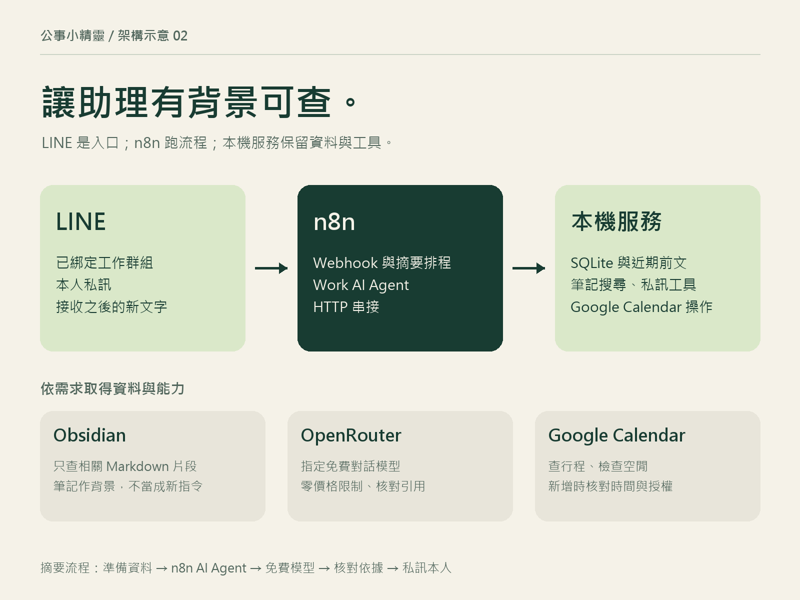

LINE WORK ELF
把工作對話
接成下一步。
LINE 公事小精靈是自行部署的個人工作助理，使用 n8n、Python 與 OpenRouter 免費模型，整理指定工作群組的討論、待回覆事項與後續建議。

日曆接進對話裡
連接自己的 Google Calendar 後，可以查詢今天、明天或本週行程，檢查空閒時間，並依明確要求新增活動。時間不完整會追問，暫定安排先確認。目前沒有修改、刪除或邀請他人的工具。
一起用，資料各自整理
多人試用模式讓朋友共用同一個 LINE 官方帳號，各自同意使用、由本人綁定工作群，再私訊收取自己的摘要。每人的訊息、待辦與摘要使用獨立資料庫；日曆、私人筆記與一般私訊 Agent 保留給部署者本人。
先私訊 /開始使用 閱讀說明，再依提示操作。多人版每日摘要預設關閉，可自行傳 /每日整理 開啟；未開啟時用 /整理 手動查看。多人版完整教學
本專案提供 MIT 開源程式。自行部署者需準備 LINE 官方帳號、OpenRouter 金鑰與選用的 Google OAuth 憑證，並自行管理資料與服務；受邀使用現有多人版的朋友不必準備 API key。
維護者的 Google OAuth 應用名稱為「LINE 公事小精靈」，供個人日曆整合使用；其他部署者應建立自己的 Google Cloud 專案。